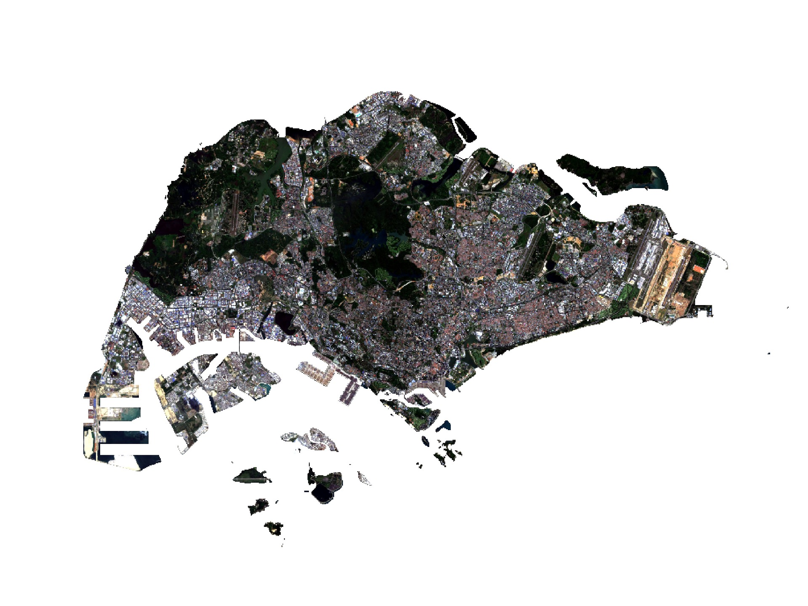

Blog
Academia
Music
Blog
Musings about data science, design, music and more…
Categories
All
(13)
Design
(1)
Music
(2)
R
(7)
Research
(6)
Software
(3)
Tutorials
(5)
Order By
Default
Title
Date - Oldest
Date - Newest
Biodiversity in cities: How can we assess the ‘performance’ of urban developments?
We need a predictive approach that compares between present and future scenarios
Aug 1, 2022
Nathan’s first drumset
Son got his first drumset as a gift… and I had a brainwave
Jan 10, 2022
Trying to fight cabin fever? The types of parks near your home matters
We need better ways to measure our access to parks and outdoor spaces
Jul 16, 2021
Changes in a city’s land cover over time
Using publicly-available satellite data to measure land cover change
Mar 12, 2021
Zoom with Drums
Exploring different ways to set up for online music lessons
Apr 5, 2020

Analysing spatial patterns of the landscape
Classify land cover and quantify landscape configuration
Feb 1, 2020
Automated image classification into content-type categories
Classify images based on keywords generated from the Google Cloud Vision API
Jan 8, 2020
A crash course in R programming
For those without coding experience
Jul 12, 2019
How to clean up ‘tracked changes’ in Word without going insane
Microsoft Word Macro to accept and highlight all tracked changes
Jun 15, 2019
The performance of city trees
Develop allometric equations for tree size and structure
Apr 1, 2018
‘Kashiwanoha Smart City’ design workshop
Collaboration between Tsinghua University, National University of Singapore and Chiba University
Feb 25, 2017
Feasibility of urban farming in compact cities
Done with the Honours Thesis!
Apr 1, 2016
Hello
Well… I finally did it. I started a website. And a blog.
Jan 1, 2016
No matching items